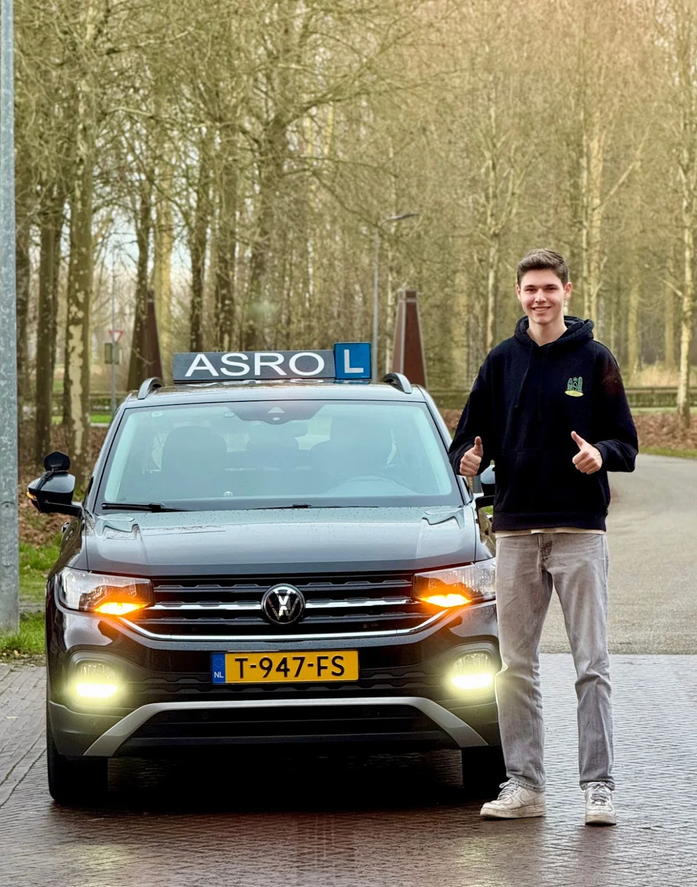
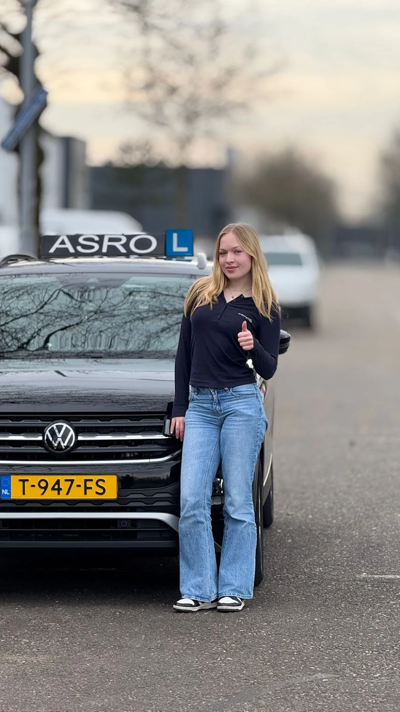

Eén instructeur · ma t/m za 07:00 tot 21:00
Zo slaag je
bij Taylan.
Eerlijke feedback, kritische vragen en pas op examen als je er klaar voor bent. Dat is de hele aanpak.
De aanpak
Vier dingen die elke leerling herkent.
Eerlijk vanaf les één
Na elke les weet je precies wat goed ging en wat beter moet. Die directheid voelt soms stevig, maar je weet altijd waar je aan toe bent en je maakt sneller stappen.
Vragen, geen voorzeggen
Taylan stelt kritische vragen over de keuzes die jij als bestuurder maakt. Waarom rem je hier? Wat zag je in die spiegel? Zo leer je zelf nadenken, ook als hij straks niet meer naast je zit.
Streng waar het moet
Op de momenten die ertoe doen is hij duidelijk en soms streng. De rest van de les is er ruimte voor humor en een goed gesprek. Precies die balans laat leerlingen snel en goed leren rijden.
Pas afrijden als je er klaar voor bent
Je gaat niet op examen om het te proberen, je gaat om te slagen. Dat is de reden dat 77% hier bij de eerste poging slaagt (bron: CBR via Clickdrive).
Spoedcursus
Snel je rijbewijs, zonder afraffelen.
Rijbewijs nodig voor een baan, stage of studie? Bij Asro is er geen wachtlijst: je kunt direct beginnen en blokuren dicht op elkaar plannen. Meerdere leerlingen haalden hun rijbewijs zo binnen 3 tot 4 maanden, in één keer.
Het tempo gaat omhoog, de lat niet omlaag. Ook op de spoedroute rijd je pas af als je er klaar voor bent, met de tussentijdse toets als generale repetitie. Snel slagen is het doel, maar wel in één keer.


Faalangst en rijangst
Zenuwen rijden niet mee.
Spanning achter het stuur is normaal, zeker als er een examen aankomt. Taylan bouwt je vertrouwen op met een bak mensenkennis: kleine stappen, herhalen tot het zit, en pas verder als jij er klaar voor bent.
Voor wie het nodig heeft bestaat het faalangstexamen bij het CBR, met extra tijd en een examinator die rekening houdt met spanning. Maar het zegt genoeg dat Kim, in haar eigen woorden iemand met mega faalangst, dat examen niet eens nodig had. Ze slaagde gewoon in één keer.
"Taylan heeft mij zo goed en persoonlijk geholpen dat ik zelfs geen faalangstexamen nodig had."
Kim, in één keer geslaagd
Tussen de lessen door
Theorie en voortgang in je zak.
Elke leerling van Asro krijgt toegang tot de On My Way app. Daarin oefen je je theorie, bereid je lessen voor met praktijkvideo's en zie je precies welke onderdelen je al beheerst. Zo weet jij net zo goed als Taylan waar je staat op de route.
Werkgebied
Rijles in Den Bosch en omgeving.
Taylan haalt je op in heel 's-Hertogenbosch en de dorpen eromheen. Alle examenroutes en verkeerssituaties van Den Bosch en omgeving worden systematisch doorgenomen, van de drukke afritten van de A2 tot de rotondes van Rosmalen.
Ervaar het zelf.
Gratis.
Een uur meerijden zegt meer dan een hele website. Plan je gratis proefles en voel of het klikt.